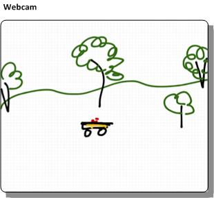
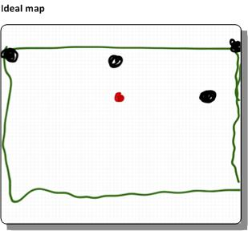

Better location identification within yard
Randall Maas 7/26/2013 9:13:24 AM
This is a note on improving the locating feature of the car. When I last described the locating feature of the robocar, it was based on principally on GPS, followed by some estimation techniques. There are some limits to how well these work.
- First, my yard - and any other - isn't a "flat" plane on the surface of a perfect sphere; it's has slopes, hills, and such, making the surface bigger than a simple plane. This is a two fold problem: converting the GPS 3coords into the 2d surface that I know as my yard requires some ad hoc math. And geomapping software, such as Google Maps, Bing Maps, or Open Maps gets everything wrong when you zoom in closer than, say, a 100 meters ' the landmarks in all the wrong places. I'm sure surveyors don't have this problem.
- Second, GPS and small GPS receivers are rarely accurate to a few meters, some days not even accurate to tens of meters. I'd like to see decimeters accuracy more consistently. This mostly has to do with small antenna and receivers that take in only a small number of channels in the device.
Why not inertial measurement units?
Adding in more position estimators into the robocar is fun. I bought a couple of inertial measurement units - intended for aerovehicles, with gyroscopes and accelerometers. But these are not the most productive solution. They are based on integration motion, and noice. It can be a lot of work to keep noise and accumulated error down, while still getting useful information when you're moving as slow as car does. So, sure an IMU can contribute a lot, but I think my effort should go into another approach.
So the fix? Cameras.
Using cameras
The idea is that a camera, such as a wireless webcam, would look out at section of my yard. I said my yard wasn't a plane, but piecewise it is. And most of what this camera is looking at is a flat plane.
So take what a webcam sees:

And map it onto an ideal map of my yard:

So, all a base computer needs to do is:
- Know how to map the points in the camera image to the coordinates on an ideal 2-d map of my yard.. and do so with more consistent precision (and accuracy) than GPS.
- Find the robocar and perform that mapping
- Send the results to the robocar
Planar homography
The first step sounds like arm waving. My plan would be to apply planar homography to solve that problem. Planar homography is a linear algebra technique that maps one view of a plane (such as what a webcam sees) to the another view of the plane (such as the ideal map), using some linear algebra (which a lot of money was spent for me to learn). The mapping is, mostly, a transform matrix that when multiplied against the point in the webcam's coordinates produces a point in the ideal map's coordinates
Conceptually, the matrix is just a structure that contains:
- The amount of horizontal and vertical offset there is between the two coordinates
- The amount of rotation from one coordinate to the other, and
- How skewed one plane is with respect to the other ' that is, the amount of perspective in the webcam.
A note on camera position
It's the last point that is the biggest limit to quality of this process. If the webcam is looking out toward the horizon, it simply isn't going to do a good job at approximating position in the ideal yard plane. The best position is for the webcam to be looking down.
In my case, I was figuring I'd mount the webcam high up on pole on my deck, so that it looks "down" on the yard as much as
possible.
Calibration
The camera - or each camera - must be individually calibrated. That process has a couple of manual steps.
- First, the computer would need to know the locations of several key landmarks, in whatever coordinates are being used for the ideal yard map.
- Someone (me) would have to pick off in the webcam image the landmark positions. It's best if the landmarks are as close as possible to the corners of the webcam image.
- Finally, the computer does some linear algebra and produces the relevant matrix and other terms
Notes:
- The links above use an overly generic (and hence abstract) method to describe the construction of the matrix. That's the hazard of the using academic material. Don't panic: the math can be made pretty easy for this; there's no need to create (or use) a generic linear algebra solver.
- If the webcam moves around a lot ' and it might ' maybe it might be useful to put a visual marker in the yard at the landmarks. With a little bit of work, the software can adjust the webcam coordinates of the landmarks as the camera moves
Use
From there, the software needs to
- Find the robocar in the webcam. I don't know how to do this yet. Maybe attach an unusually colored ball to the top of the robocar, and look for that color in the webcam image
- Check the coordinates ' are they in reasonable bounds?
- Multiply against the matrix
- Send the results to the robocar.
Fancier, and possibly more accurate, approach might be to use a mesh of webcams that overlap and look out at various areas of the yard. This would involve some estimate of how wide the error is for a given position in one webcam's perspective and switch to a better one. Or maybe a way to fuse multiple approximations together.
Irrelevant Bonus
Finally, the fundamental matrix song, for no real reason.